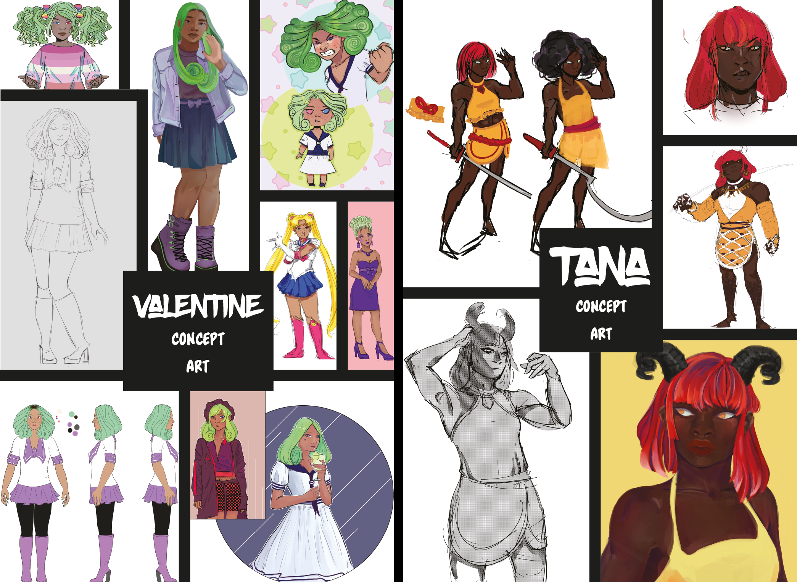

<<<<<<< HEAD
=======
>>>>>>> 089eba184dc07c5f1b7be7861054194700042f48
<<<<<<< HEAD
=======
>>>>>>> 089eba184dc07c5f1b7be7861054194700042f48
<<<<<<< HEAD
=======
>>>>>>> 089eba184dc07c5f1b7be7861054194700042f48
Costumes est une courte bande dessinée que j'ai développée lors de mon stage chez GoBelieve Culture. Elle est censée faire partie d'une anthologie plus large présentant d'autres bandes dessinées sur le thème de l'automne réalisées par des artistes indépendants.
Outils: Clip Studio Paint, Adobe Photoshop, Adobe Indesign
Costumes est une courte bande dessinée que j'ai développée lors de mon stage chez GoBelieve Culture. Elle est censée faire partie d'une anthologie plus large présentant d'autres bandes dessinées sur le thème de l'automne réalisées par des artistes indépendants.
Outils: Clip Studio Paint, Adobe Photoshop, Adobe Indesign
Le problème consiste à trouver comment créer une histoire visuelle unique et engageante dans un nombre de pages et de temps limités. Le thème de l'automne m'a présenté un monde de possibilités et une seule contrainte.
P1
P2
P3
P4
>>>>>>> 089eba184dc07c5f1b7be7861054194700042f48
P5
<<<<<<< HEAD
×>
×
Schema initial
=======
P6
Developpement
>>>>>>> 089eba184dc07c5f1b7be7861054194700042f48
LISA

Valentine est le personnage secondaire de la bande dessinée et est présenté à mi-parcours. Dans Costumes, elle s'agit d'une enfant de moins de 11 ans. Vous trouverez ici des illustrations illustrant son développement en tant qu'adolescente et jeune adulte. Valentine est une enfant orpheline d'origine inconnue. Elle est afro-américaine, mais elle a aussi quelques subtiles caractéristiques asiatiques. Dans la bande dessinée, elle apparaît comme une jeune enfant avec ses cheveux bruns naturels dans un afro portant une tenue dépareillée dans une tentative junior de costume d'Halloween.
Le prénom Tana est un prénom féminin d'origine grecque signifiant « déesse du feu ou des étoiles ». Après tout, Tana se considère comme une déesse, son propre dieu. Une variante de Tanya, un nom de compagnie russe pour Tatiana. Cela signifie « reine des fées ». C'est aussi la forme féminine du nom romain Tatianus, un dérivé du nom romain TATIUS. C'était le nom d'un saint du IIIe siècle qui fut martyrisé à Rome sous l'empereur Alexandre Sévère. Elle était particulièrement vénérée dans le christianisme orthodoxe et son nom était courant en Russie.
Yassmine Tissaoui s'intéresse à la place de la diversité dans son travail d'illustration stylisé, qu’iel utilise pour explorer des concepts de beauté non conventionnelle.
<<<<<<< HEAD
Ayant obtenu son BTS en infographie et multimédia , iel a acquis une clarté et une compréhension de l'industrie du design et cherche à utiliser ses vastes compétences pour sensibiliser aux problèmes sociaux et écologiques importants. Elle pense qu'iel est important d'utiliser sa compréhension du marketing pour sensibiliser le public et d’utiliser son art pour rendre le monde plus agréable. Iel est étudiant-e en deuxième année de design graphique à Boulogne-Billancourt, plus précisément au DNMADe Graphisme Augmenté du lycée Jacques-Prévert.
Iel apprécie l’art dans toutes ses formes, plutôt préoccupé-e par le sentiment et le message derrière lui que son support. Les photographies de Nan Goldin, les peintures de Liu Xiaodong et les illustrations de Junji Ito ont toutes joué un rôle formatif dans son parcours graphique.
Iel a développé un grand intérêt pour le motion design et l'art séquentiel. Outre l’art, ses intérêts incluent la lecture, le crochet, et le yoga. Iel a toujours aimé la littérature d'horreur et de mystère et cherche toujours des auteurs divers et uniques. Iel est aussi une joueuse de jeux vidéo de longue date.
ContactInstagramLinkedInCVNotre section
=======
Ayant obtenu son BTS en infographie et multimédia , iel a acquis une clarté et une compréhension de l'industrie du design et cherche à utiliser ses vastes compétences pour sensibiliser aux problèmes sociaux et écologiques importants. Elle pense qu'iel est important d'utiliser sa compréhension du marketing pour sensibiliser le public et d’utiliser son art pour rendre le monde plus agréable. Iel est étudiant-e en deuxième année de design graphique à Boulogne-Billancourt, plus précisément au DNMADe Graphisme Augmenté du lycée Jacques-Prévert.
Iel apprécie l’art dans toutes ses formes, plutôt préoccupé-e par le sentiment et le message derrière lui que son support. Les photographies de Nan Goldin, les peintures de Liu Xiaodong et les illustrations de Junji Ito ont toutes joué un rôle formatif dans son parcours graphique.
Iel a développé un grand intérêt pour le motion design et l'art séquentiel. Outre l’art, ses intérêts incluent la lecture, le crochet, et le yoga. Iel a toujours aimé la littérature d'horreur et de mystère et cherche toujours des auteurs divers et uniques. Iel est aussi une joueuse de jeux vidéo de longue date.
! ContactInstagramLinkedInCVNotre section
>>>>>>> 089eba184dc07c5f1b7be7861054194700042f48